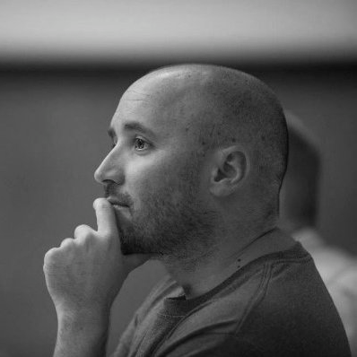

Gumersindo Lafuente. Led the last revamping of El País online edition. Former editor of elmundo.es. Founder of SOITU. Lecturer at Fundación Gabriel García Márquez.
Gonzalo Fanjul. Poverty and development expert. Former research director at Oxfam Spain. For more than a decade, he was one of the leading voices of Oxfam international campaings. He leads +Social, and is an associate researcher at ISGlobal and CIECODE. Co-author of '3.500 Millones', a blog hosted by El País. He studied at the Kennedy School of Government (Harvard).

Carlos Martínez de la Serna. Journalist by career, he is currently a John S. Knight fellow at Stanford University and a lecturer at the Hasso Platner Institute of Design. Former editor of elmundo.es health channel.
Cristina de Martos. Journalist focused on health and biomedical news coverage, and social media. She was a staff writer at Spanish newspaper El Mundo (2005-2013.

Chema Conesa. Photojournalist and graphic editor. He has worked at El Pais and El Mundo. He is also a curator of photo exhibitions and photo books. He was awarded with the Bartolomé Ros Prize in recognition of his career.
Alberto Cairo. Journalist, professor and author. Alberot is an Assistant Professor of the Professional Practice at the School of Communication of the University of Miami, where he is also the director of the visualization program at UM's Center for Computational Science.
Paola Bernal. A third sector professional. Graduated in economic sciences and postgraduate studies in Management and Assessment of Projects, Fundraising and Master Degree in sustainable development.
Virginia Rodríguez. Lawyer and political scientist working on human rights and international law. She's been in charge of research on children and human rights at Save the Children Spain, and manager of research and policy at Amnesty International.
Eva Moreno. Health communications expert, with a wide experience including Sanitas Hospitales, Mediclinic International and USP Hospitales. She works regularly with Oxfam Intermón.